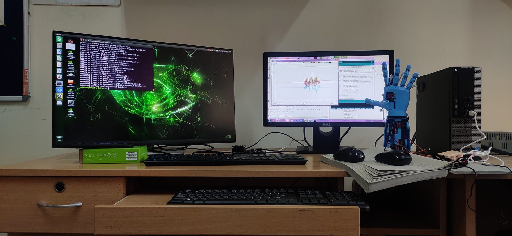

Model-to-hand integration
Ran a pretrained grasp model on Raspberry Pi and connected its output to Arduino-controlled servos on a 3D-printed hand.
RESEARCH INTERNSHIP / CSIR-CSIO / JAN–JUN 2022
I integrated hardware and tested grasp-classification models for a prosthetic hand research project, then developed an automated image-acquisition rig to capture objects across different distances, heights and orientations.

Dataset totals documented in my internship report: 30 objects per grasp class, captured from 20 camera positions and five object orientations.
01 / MY CONTRIBUTION
The internship formed part of CSIR-CSIO's research into computer-vision and accelerometer-based grasp selection for a prosthetic hand. My work covered testing existing AI models on the hand, integrating sensors and actuators, and developing the hardware and software for automated dataset capture.
Ran a pretrained grasp model on Raspberry Pi and connected its output to Arduino-controlled servos on a 3D-printed hand.
Integrated distance and laser modules with the camera, measured gripper force, and collected motion data with an MPU6050.
Coordinated camera movement, camera tilt and object rotation with Python and Arduino programs.
Organized images by object and grasp class, producing a dataset of 9,000 images for subsequent model development.
02 / DEVELOPMENT RECORDINGS
My laboratory test session with the vision interface, showing how its predictions respond as objects and their positions change.
The acquisition rig repeats a programmed sequence of camera positions and object orientations to collect varied training images.
Silent development recordings from the internship, presented at their original speed.
03 / VISION TO ACTUATION
The Raspberry Pi processed camera images using an existing trained model. It sent the predicted grasp over serial communication to an Arduino Mega, which commanded the hand's servos.
The hand could execute the predicted grasp in the laboratory. Testing also exposed limitations when object scale, distance or the number of objects in the scene changed. Those observations motivated additional sensing and a more varied image dataset.
04 / AUTOMATED IMAGE ACQUISITION
A fixed camera view did not represent the changing viewpoints encountered while approaching an object. I developed an acquisition setup with two axes of camera translation, a rotating object platform and a servo that adjusted camera tilt to keep the object in view.
For each of the three grasp classes—pinch, tripod and power—the acquisition software stored each object's images in a separate numbered folder. The completed collection covered 90 objects, with 30 objects per class.
The Raspberry Pi sent a movement command over USB serial at 9,600 baud. The Arduino performed the movement and returned a confirmation token. Python waited for that acknowledgement before saving the camera frame with OpenCV and moving to the next step. Separate class programs selected the starting positions and capture sequences.
05 / SENSOR EXPERIMENTS
Integrated a VL53L0X time-of-flight distance sensor and a laser module with the camera to support experiments with object scale and target selection.
Used a force-sensitive resistor and a servo-actuated gripper to observe changes in contact force during object movement.
Collected MPU6050 accelerometer readings using an ESP8266 board and evaluated classifiers in MATLAB for exploratory hand-motion recognition.
Worked across camera acquisition, serial communication, sensor interfaces, motor control and physical test setups.
06 / OUTCOMES & ENGINEERING LESSONS
The work connected a vision-model output to physical grasp execution and produced an automated dataset-acquisition workflow. The rig generated 9,000 images across 90 objects for subsequent model training and evaluation.
The main lesson was that perception performance depends on the conditions represented in the data. Repeatable camera motion, coordinated image capture and organized files were as important to this project as the classifier itself.